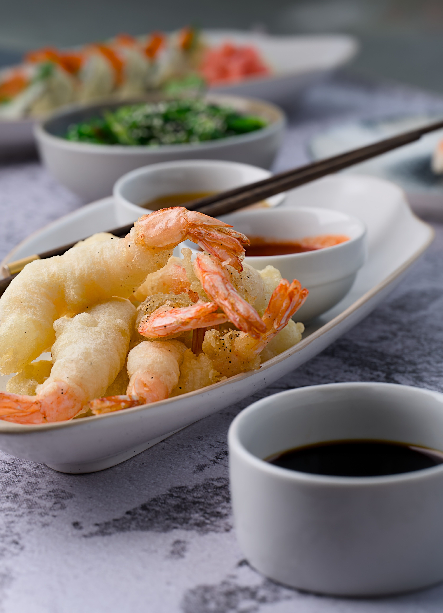

Ingredients
- 12 shrimp, peeled and deveined
- 1 cup all-purpose flour
- 1 egg
- 1 cup ice-cold water
- 1/2 cup sliced vegetables such as carrots, eggplant, or squash
- Oil for deep frying
- Salt to taste
- Tempura sauce or soy sauce for serving
Top 3 recipe
Light, crispy Japanese-style shrimp and vegetables coated in cold batter and fried until golden. The best bite is crunchy outside and tender inside.

Why I love it and who I want to eat it with
Tempura is one of my favorites because the batter is delicate and crunchy while the shrimp stays juicy inside. I want to eat this food by myself as well, I just really really want to eat it by myself since I rarely get the chance to buy this somewhere. It's a bit difficult finding some stalls that cooks tempura in a very satisfying way.